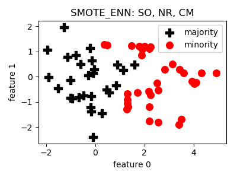
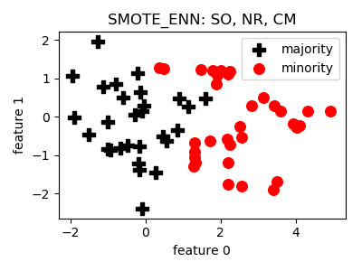

Getting Started¶
What is smote_variants?¶
Imbalanced datasets are around. In fact, the synthetic oversampling of the minority class is able to improve classification performance in imbalanced learning scenarios. There are more than 85 variants of the classical Synthetic Minority Oversampling Technique (SMOTE) published, but source codes are available for only a handful of techniques. In this package we have implemented 85 variants of SMOTE in a common framework, and also supplied some model selection and evaluation codes.
In order to get an impression on what to expect, an ordinary, imbalanced, 2D dataset can be seen in the left hand side, and the oversampled dataset on the right hand side:
 

If you use this package, please cite the following paper:
@article{smote_variants_comparison,
author={Gy\"orgy, Kov\'acs},
title={Empirical comparison and evaluation of 85 variants of the Synthetic Minority Oversampling Technique on 104 imbalanced datasets},
journal={},
volume={}
pages={},
year={2019}
}
Why oversampling?¶
At first glance, oversampling seems to be an empirical heuristic technique to improve classification performance. After all, generating samples somehow and using them for training a classifier seems to be fairly contracitory. However, there are some reasons why the contrary is the case:
- Data augmentation: sample generation is widely used on nowadays’ flagship field deep learning, but it is called data augmentation. In data augmentation additional images are generated to drive deep learning by applying various geometrical and statistical distortions like skewing or adding noise. In the image domain, it is known that these transformations shouldn’t change the useful content of the image much, but increase the variability of the training set, thus, better models can be expected. Using a general dataset, the set of transformations that keep the content unchanged is unclear, but one can expect that applying some interpolation between close data points of a class is likely to remain in the same class. This is exatly what oversampling does, so, it can be considered as a general analogy of the widely accepted data augmentation process.
- Improved regularization: to avoid overfitting, most of the classifiers have some hyperparameters for regularization. Whether it is the coefficient of the L1 or L2 norm of weights in the objective function or it is an upper bound on the depth of decision trees, it’s goal is to reduce overfitting by making a compromise between bias and variance. Training an imbalanced dataset, most of the general purpose classifiers tend to overfit the majority class (since it has a larger contribution to the loss function, or its samples are more dense and dominate some regions in the feature space, etc.). Even though the overfitting caused by imbalance is a decent effect in the training process, we have only those regularization parameters developed for balanced datasets. It becomes extremely hard to prevent overfitting some classes using the standard regularization parameters, especially if the degree of imbalance varies in space. One of the basic principles of machine learning is that the goal of regularization is to fix the lack of data. If we had enough training data, there would be no need for regularization, at all. Thus, generating training data is closely related to the root of the problem, it is a kind of regularization, in which we put artificial sample points to certain positions in the feature space to articulate what we expect about the shape of the class manifold.
- Regularization by samples - a Bayesian thought: finally, Bayesian people usually say that one important reason why Bayesian statistics is better than frequentist statistics is that in the lack of infinite data (which is ususally the case), all we can derive is a distribution on any parameter of interest. And, arbitrary distributions can be represented by a bunch of sampels. Analoguosly, in our interpretation, there is no better way to do regularization than generating artificial training sampels according to our expectations on the distribution of the data.